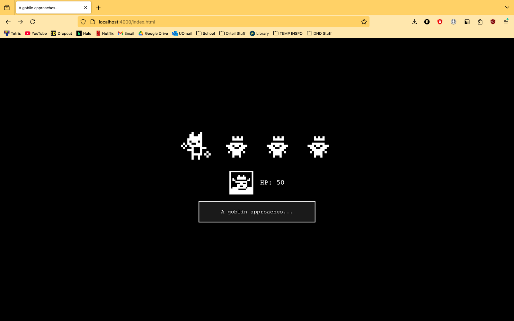

A goblin approaches...
A simple turn-based RPG where you fight against a group of goblins, deciding between defending and attacking in between waves of their attacks. The underlying code uses an object-oriented system to track various stats that change or need to be referenced throughout the game, and the whole thing is hosted locally on a node.js server and an html webpage which provides a visual interface for the player to play the game.